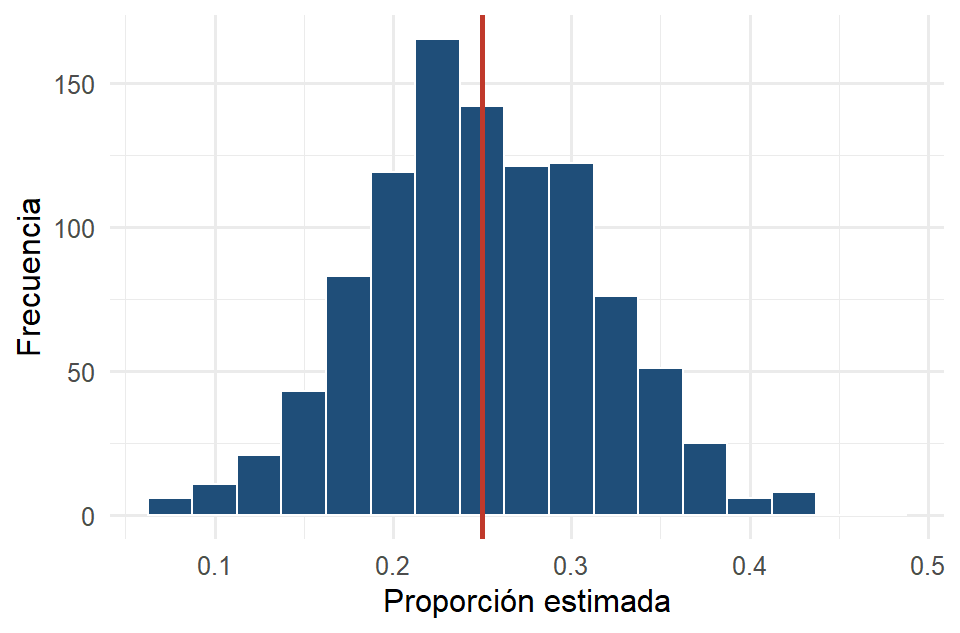

rick <- read.csv("datos/rickettsiosis.csv")
p_pob <- mean(rick$resultado == "positivo")
p_pob # proporción verdadera de positivos en la población
#> [1] 0.254 Producción de datos: muestreo
AdvertenciaCapítulo en revisión
El contenido de este capítulo está completo, pero todavía no pasa por la revisión final de redacción. Se avisará en clase cuando quede listo para estudiar de aquí. Mientras tanto se puede consultar, con esa advertencia.
TipObjetivos del capítulo
- Distinguir población, muestra y unidad de muestreo.
- Reconocer sesgos de selección y de medición, y por qué una muestra grande no los corrige.
- Separar el error de muestreo del error no de muestreo.
- Elegir entre los métodos de muestreo aleatorio y simularlos en R.
Empieza la Parte II. Las técnicas de inferencia que veremos después son tan buenas como los datos que las alimentan: de dónde vienen los datos importa tanto como qué hacemos con ellos. Este capítulo trata de cómo obtener una muestra que realmente represente a la población.
4.1 Población, muestra y unidad de muestreo
- La población es el conjunto completo de individuos sobre los que queremos concluir.
- La muestra es la parte de la población que efectivamente observamos.
- La unidad de muestreo es cada individuo que puede ser seleccionado.
Casi nunca podemos medir a toda la población (un censo es caro y a veces imposible), así que tomamos una muestra y, a partir de ella, estimamos. Un valor calculado sobre la población es un parámetro (lo que quisiéramos conocer); el mismo valor calculado sobre la muestra es un estadístico (lo que sí podemos calcular). El arte del muestreo es que el estadístico se parezca al parámetro.
Para ver cómo funciona el muestreo haremos algo que en la vida real no podemos: tratar un conjunto de datos como si fuera toda la población. Usaremos el registro de rickettsiosis (420 personas) y, como lo tenemos completo, conocemos el “parámetro verdadero”:
4.2 Sesgos: cuando la muestra miente
Una muestra es sesgada cuando tiende, sistemáticamente, a dar valores alejados del parámetro. Hay dos fuentes principales:
- Sesgo de selección: la forma de elegir favorece a ciertos individuos. Encuestar solo a quien contesta el teléfono fijo deja fuera a los jóvenes.
- Sesgo de medición: el instrumento o la pregunta distorsionan la respuesta. Una pregunta sugerente, una báscula descalibrada.
Veamos el sesgo de selección en acción. Si por comodidad tomáramos la muestra solo de la zona urbana marginada (donde la positividad es más alta), sobreestimaríamos:
set.seed(2026)
sesgada <- rick |> filter(zona == "urbana_marginada") |> slice_sample(n = 40)
mean(sesgada$resultado == "positivo") # muy por encima del parámetro real
#> [1] 0.35
ImportanteUna muestra grande NO corrige el sesgo
Es el error más común. Si el método de selección está sesgado, tomar más individuos solo da una respuesta equivocada con más decimales. La famosa encuesta de 1936 que predijo (mal) la elección presidencial de EE. UU. tenía millones de respuestas: su problema no era el tamaño, era el sesgo de selección. Contra el sesgo, lo que sirve es la aleatorización, no el tamaño.
4.3 Error de muestreo y error no de muestreo
Aunque el muestreo sea perfecto, dos muestras distintas dan resultados distintos. A eso se le llama error de muestreo, la variación natural de una muestra a otra. Es inevitable, pero se reduce al aumentar el tamaño de la muestra y se puede cuantificar (el margen de error, que formalizaremos en el Capítulo 8).
El error no de muestreo es todo lo demás: sesgos, no-respuesta, errores de captura. No se arregla con más datos y suele ser el más peligroso porque no aparece en las fórmulas.
Simulemos el error de muestreo. Tomemos muchas muestras aleatorias de tamaño 40 y veamos cómo varía la proporción estimada alrededor del parámetro real:
set.seed(2026)
estimaciones <- replicate(1000, {
m <- slice_sample(rick, n = 40)
mean(m$resultado == "positivo")
})
ggplot(data.frame(p = estimaciones), aes(x = p)) +
geom_histogram(binwidth = 0.025, fill = "#1F4E79", color = "white") +
geom_vline(xintercept = p_pob, color = "#C0392B", linewidth = 1) +
labs(x = "Proporción estimada", y = "Frecuencia")
mean(estimaciones) # el promedio de las estimaciones cae junto al parámetro real
#> [1] 0.24965
NotaInterpretación
Las estimaciones se reparten alrededor del valor verdadero (línea roja): ninguna muestra da exactamente el parámetro, pero en promedio aciertan y la mayoría cae cerca. Eso es un muestreo sin sesgo: yerra por azar, no por sistema. Si repitieras el ejercicio con muestras de tamaño 150, el histograma sería más angosto (menos error de muestreo). Esta idea es la semilla de las distribuciones muestrales del Capítulo 7.
4.3.1 Laboratorio: el tamaño de la muestra y el sesgo
Este laboratorio junta las dos ideas centrales del capítulo. El primer deslizador cambia el tamaño de muestra y muestra cómo se angosta la distribución de estimaciones. El segundo introduce un sesgo en el método de selección, y revela algo incómodo. Por más que crezca la muestra, las estimaciones se apretujan alrededor del valor equivocado.
NotaInterpretación
Con sesgo en cero, aumentar \(n\) angosta el histograma alrededor de la línea roja: más datos, más precisión. Al subir el sesgo a 0.10 y aumentar luego \(n\) hasta 300: el histograma se vuelve angosto pero centrado en el lugar equivocado. Ahí está, en una imagen, la lección del capítulo. El tamaño de muestra reduce el error de muestreo, nunca el sesgo. Una estimación sesgada con muestra grande es peligrosa justamente porque parece precisa.
4.4 Métodos de muestreo aleatorio
La defensa contra el sesgo de selección es dejar que el azar elija. Hay varias formas:
- Aleatorio simple (MAS): cada individuo tiene la misma probabilidad de ser elegido, como sacar nombres de una urna.
- Estratificado: se divide la población en estratos homogéneos (por zona, por sexo) y se muestrea dentro de cada uno. Asegura representación de todos los grupos y suele dar estimaciones más precisas.
- Sistemático: se elige cada k-ésimo individuo de una lista (uno de cada diez). Simple, pero riesgoso si la lista tiene un patrón periódico.
- Por conglomerados: la población se agrupa en conglomerados (colonias, escuelas), se eligen algunos conglomerados completos al azar y se mide a todos sus miembros. Barato cuando la población está dispersa.
- Multietápico: combina los anteriores en etapas (elegir municipios, luego colonias, luego hogares). Es lo que usan las grandes encuestas nacionales.
En R, el muestreo aleatorio simple es slice_sample():
set.seed(1)
mas <- slice_sample(rick, n = 40)
mean(mas$resultado == "positivo")
#> [1] 0.175El estratificado por zona se logra agrupando antes de muestrear:
set.seed(1)
estratificada <- rick |>
group_by(zona) |>
slice_sample(prop = 0.10) |> # 10 % de cada zona
ungroup()
count(estratificada, zona)Y el sistemático, tomando uno de cada k de la lista:
k <- 10
sistematica <- rick[seq(1, nrow(rick), by = k), ]
nrow(sistematica)
#> [1] 424.4.1 Laboratorio: los cuatro métodos, lado a lado
Este campo tiene 96 lagartijas de tres especies, cada una ocupando su propia zona del terreno: la A la mitad izquierda (48 individuos, 50 %), la B la franja central (32, 33 %) y la C la orilla derecha (16, 17 %). Al elegir un método y cambiar el tamaño de muestra conviene observar dos cosas: dónde caen los individuos seleccionados y qué tan bien la composición de la muestra reproduce la de la población.
NotaInterpretación
Con el aleatorio simple, los seleccionados caen por todo el campo, en las tres zonas, sin que nadie se lo indique: el azar solito tiende a repartirlos. La composición sale parecida a la real, con algo de variación.
Con el estratificado, se toma una cuota de cada zona proporcional a su tamaño. Con \(n = 24\) toca exactamente 12 de la A, 8 de la B y 4 de la C, y las dos columnas de la tabla coinciden casi perfecto. Se muestrea dentro de todas las zonas.
Con conglomerados, se eligen parcelas completas al azar (los recuadros punteados) y se mide todo lo que hay dentro. Es mucho más barato en campo (basta desplazarse a dos parcelas en vez de recorrer las 96 posiciones), pero como cada parcela cae casi por completo dentro de una zona, la muestra puede quedar compuesta casi de una sola especie. Vuelve a elegir este método varias veces y se observa saltar las barras.
Con el sistemático, se recorre el campo en orden tomando uno de cada \(k\); al avanzar por renglones va pasando por las tres zonas, así que representa bien. Sería riesgoso solo si el recorrido tuviera un patrón periódico que coincidiera con \(k\).
La distinción que más se confunde, y aquí se ve de golpe porque ambos métodos usan la misma partición del campo. En el estratificado se toman algunos de cada grupo; en conglomerados se toman todos los de algunos grupos. El estratificado busca precisión; los conglomerados buscan economía.
Tip¿Qué técnica usar?
Para elegir un método de muestreo:
| Situación | Método |
|---|---|
| Lista completa y sencilla de la población | Aleatorio simple |
| Grupos claros que se quiere representar bien | Estratificado |
| Una lista ordenada, sin patrones periódicos | Sistemático |
| Población dispersa; medir todo un grupo es barato | Por conglomerados |
| Encuestas grandes a varias escalas | Multietápico |
En todos, la clave es que interviene el azar. Eso es lo que protege del sesgo de selección.
4.5 Resumen
Antes de analizar, hay que producir bien los datos. Distinguimos población, muestra y unidad de muestreo, y vimos que el enemigo es el sesgo (de selección o de medición), que ninguna cantidad de datos corrige. El error de muestreo es la variación natural entre muestras y se reduce con el tamaño; el error no de muestreo no. La aleatorización, en sus distintas formas (simple, estratificado, sistemático, por conglomerados, multietápico), es la herramienta que hace que una muestra represente a su población. En el Capítulo 5 veremos la otra forma de producir datos: los experimentos.
4.6 Ejercicios
Identificar el método. Para cada caso, decir qué tipo de muestreo se usó:
- Se numeran los 100 sucursales de una cadena y se eligen 8 al azar, encuestando a todos los clientes de esas 8.
- De un padrón estudiantil se elige a una persona al azar cada 25 de la lista.
- Se divide a la población por sexo y se toma una muestra aleatoria dentro de cada grupo.
Población y unidad. En una encuesta de satisfacción a estudiantes de la LCC, identificar la población, la unidad de muestreo y un posible parámetro de interés.
Tipo de sesgo. Clasificar cada situación como sesgo de selección o de medición y explicar:
- Una encuesta de ingresos aplicada solo en un centro comercial de lujo.
- Preguntar “¿No es cierto que el nuevo sistema es excelente?”.
El tamaño no salva. Explicar con palabras propias por qué una encuesta con un millón de respuestas puede ser peor que una de mil bien muestreada.
Simulación en R. Repetir la simulación de proporciones del capítulo pero con muestras de tamaño 150 en lugar de 40. Comparar el ancho de los dos histogramas. ¿Qué error disminuyó: el de muestreo o el no de muestreo?
Diseñar un muestreo. Se desea estimar la preferencia por una nueva bebida entre los clientes de una cadena de cafeterías con 100 sucursales en la ciudad. Proponer un método de muestreo, justifícalo y señala un sesgo que el diseño ayude a evitar.
Experimenta con el simulador. En el laboratorio del Sección 4.4.1, fijar el tamaño de muestra en 24 y elegir cinco veces el muestreo por conglomerados, anotando cada vez el porcentaje de la especie C en la muestra. Repetir con el estratificado. ¿Cuál de los dos da resultados más estables, y por qué? Relacionar la respuesta con el hecho de que cada especie ocupa su propia zona del campo.
TipSoluciones y retroalimentación
1. (a) Por conglomerados: los conglomerados son las sucursales; se eligen algunas completas y se mide a todos sus clientes. (b) Sistemático: se toma cada k-ésimo elemento de una lista. (c) Estratificado: se divide en estratos (sexo) y se muestrea dentro de cada uno. Distinción clave: en el estratificado se muestrea dentro de todos los grupos; en conglomerados se eligen algunos grupos completos.
2. Población: todos los estudiantes inscritos en la LCC. Unidad de muestreo: cada estudiante. Parámetro de interés: por ejemplo, la proporción de estudiantes satisfechos con las actividades extracurriculares, o la media de una calificación de satisfacción del 1 al 10. El parámetro se refiere siempre a la población, no a la muestra.
3. (a) Sesgo de selección: el lugar donde se aplica la encuesta favorece sistemáticamente a personas de mayores ingresos, que no representan a la población general. (b) Sesgo de medición: la redacción de la pregunta induce la respuesta; el instrumento distorsiona lo que se mide. Truco para distinguirlos: conviene preguntarse si el problema está en a quién le pregunto (selección) o en cómo le pregunto (medición).
4. Porque el tamaño solo reduce el error de muestreo, mientras que el sesgo es un error sistemático que no se promedia hacia cero. Con un método sesgado, un millón de respuestas dan una estimación muy precisa de un número equivocado, y encima la precisión aparente genera una falsa confianza. Mil respuestas bien aleatorizadas estiman el valor correcto con un margen de error honesto. Puede comprobarse en el laboratorio del Sección 4.3.1 subiendo el sesgo y luego n.
5. El histograma con \(n = 150\) es visiblemente más angosto que el de \(n = 40\), y sigue centrado en el mismo lugar. Disminuyó el error de muestreo; el error no de muestreo no se ve afectado por el tamaño (en esta simulación no hay sesgo, así que no hay error no de muestreo que reducir). La regla precisa: la dispersión de las estimaciones se reduce en proporción a \(1/\sqrt{n}\), así que cuadruplicar la muestra reduce el error a la mitad.
6. Una buena propuesta es un muestreo por conglomerados o multietápico: elegir al azar, digamos, 15 de las 100 sucursales y dentro de cada una encuestar a clientes seleccionados al azar durante distintos días y horarios. Justificación: recorrer las 100 sucursales es caro, y los conglomerados hacen el trabajo de campo viable. Sesgos que evita: al aleatorizar sucursales se evita el sesgo de elegir solo las de zonas céntricas o de mayor ingreso; al variar días y horarios se evita sobrerrepresentar a quienes van los fines de semana o por la mañana. Una respuesta que solo diga “encuestar a los clientes de la sucursal más cercana” describe un muestreo por conveniencia, que es precisamente lo que queremos evitar.
7. El estratificado da resultados perfectamente estables: al fijar la cuota por especie (50 %, 33 % y 17 %), el porcentaje en la muestra reproduce el de la población en todas las corridas. El de conglomerados salta muchísimo, porque cada parcela cae casi por completo dentro de una sola zona. Si el azar elige la parcela de la izquierda, la muestra queda compuesta casi solo de especie A y la C no aparece. Este fenómeno se llama efecto de diseño: cuando los individuos de un mismo conglomerado se parecen entre sí, el conglomerado aporta menos información que el mismo número de individuos elegidos por separado, y la estimación pierde precisión. Por eso las encuestas por conglomerados requieren muestras más grandes para alcanzar la misma precisión que un aleatorio simple — el precio que se paga por el ahorro en trabajo de campo.